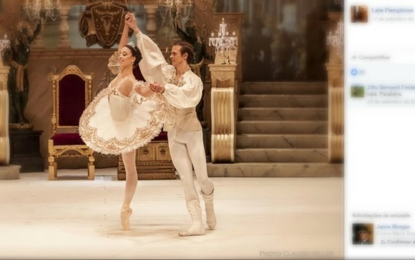

LAIS PALOMA
laís tem origem em campo grande e sua primeira escola de ballet foi na cidade morena ."Laís passou no teste para estudar na Escola do Teatro Bolshoi no Brasil, em Joinville, quando tinha 13 anos. Era a primeira que ela tentava entrar na principal academia de ballet do país. Dos 14 aos 20 anos viveu na cidade catarinense onde se formou em ballet clássico.A carreira internacional de bailarina profissional foi o grande sonho da jovem Laís Pamplona, de 30 anos, que se apresenta há oito nos palcos da Áustria."